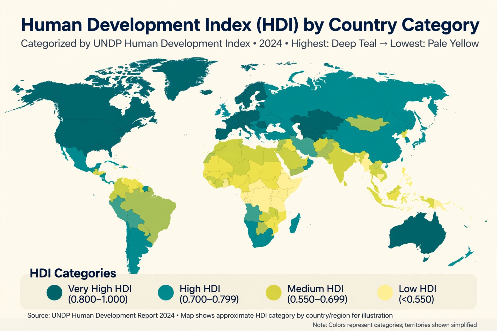

The Human Development Index (HDI) is a statistical composite index of life expectancy, education, and per capita income indicators, which is used to rank countries into four tiers of human development. A country scores a higher level of HDI when the lifespan is higher, the education level is higher, and the gross national income GNI (PPP) per capita is higher. It was developed by Pakistani economist Mahbub ul Haq and was further used to measure a country's development by the United Nations Development Programme (UNDP)'s Human Development Report Office.
The index was developed in 1990 by Mahbub ul Haq and Indian economist Amartya Sen. Countries are divided into four categories based on their HDI: Very High, High, Medium, and Low human development. The 2023/2024 report, released in March 2024, contains HDI data for 193 countries and territories.
The HDI is calculated as the geometric mean of normalised indices for three dimensions: a long and healthy life (life expectancy at birth), knowledge (expected and mean years of schooling), and a decent standard of living (GNI per capita at PPP). Each dimension is scaled between minimum and maximum goalposts, and the three dimension indices are combined using a geometric mean introduced in the 2010 report, replacing the earlier arithmetic mean.
| Rank | Country | HDI (2022 data) |
|---|---|---|
| 1 | Switzerland | 0.967 |
| 2 | Norway | 0.966 |
| 3 | Iceland | 0.959 |
| 4 | Hong Kong | 0.956 |
| 5 | Denmark | 0.952 |
| 5 | Sweden | 0.952 |
| 7 | Germany | 0.950 |
| 7 | Ireland | 0.950 |
| 9 | Singapore | 0.949 |
| 10 | Australia | 0.946 |
| 10 | Netherlands | 0.946 |
| 13 | Finland | 0.942 |
| 15 | United Kingdom | 0.940 |
| 18 | Canada | 0.935 |
| 20 | United States | 0.927 |
| 24 | France | 0.910 |
| 30 | Japan | 0.920 |
At the other end of the scale, countries such as Somalia, South Sudan, the Central African Republic, Niger and Chad have recorded the lowest HDI values, below 0.400 in the most recent reports.